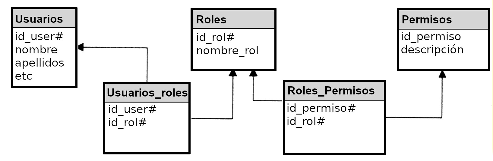

1.6. Cookies y sesiones
- 1.6.1. ¿Qué son las cookies?
- 1.6.2. Manejando cookies con PHP
- 1.6.3. Variables de sesión
- 1.6.4. Abrir sesiones: session_start()
- 1.6.5. Usar variables de sesión: $_SESSION
- 1.6.6. Eliminar variables de sesión: unset() y session_destroy()
- 1.6.7. Control de acceso a las aplicaciones web
- 1.6.8. Autenticación mediante ACL
En esta sección vamos a ver qué son las cookies y cómo podemos acceder a ellas para crearlas o manipularlas desde PHP.
1.6.1. ¿Qué son las cookies?
Las cookies son pequeños archivos de texto enviados desde el servidor que se almacenan en el lado del cliente. Es decir, en el navegador.
Permiten guardar información de forma persistente, de manera que se mantenga entre una petición al servidor y otra. Una cookie puede estar viva durante minutos, horas, días o incluso indefinidamente.
Desde PHP, se pueden usar las cookies usando la función setcookie() y el array global $_COOKIE. Vamos a ver cómo.
1.6.2. Manejando cookies con PHP
Enviar una cookie: setcookie()
Esta función define una cookie que se enviará al cliente junto con el resto de las cabeceras de HTTP. Devuelve true si la cookie se envía con éxito o false en caso contrario.
Su sintaxis es:
bool setcookie ( string $name [, string $value [, int $expire = 0 [, string $path [, string $domain [, bool $secure = false [, bool $httponly = false ]]]]]] )
Las cookies deben enviarse antes de que el programa genere ninguna salida. Esto no es un capricho de PHP, sino una restricción del protocolo http. Por lo tanto, debes llamar a esta función antes de hacer cualquier salida, incluidos espacios en blanco. En caso contrario, la cookie no estará disponible hasta que la página se recargue.
La función setcookie() admite un montón de parámetros, la mayor parte de ellos optativos:
- name: El nombre de la cookie. Este es el único obligatorio.
- value: El valor de la cookie.
- expire: El tiempo que la cookie tardará en expirar. Se trata de una fecha expresada en formato Unix.
- path: La ruta del servidor para la que la cookie estará disponible. Si se utiliza ‘/’, la cookie estará disponible en la totalidad del dominio.
- domain: El dominio para el cual la cookie está disponible.
- secure: Si la cookie solo debería enviarse en caso de conexión https, pon este argument a true.
- httponly: Esta cookie solo será accesible a través de http. Es decir, no podrá accederse a la cookie desde Javascript.
Aquí tienes tres ejemplos de envío de la misma cookie:
<?php
$value = "I'm your father";
setcookie("VaderQuote", $value);
setcookie("VaderQuote", $value, time()+3600); // la cookie expira en una hora
setcookie("VaderQuote", $value, time()+3600, "/quotes/", "bestquotes.com", 1);
?>
Recuperar una cookie: $_COOKIES[]
Para ver el contenido de una cookie, simplemente hay que acceder al array global $_COOKIES. Por ejemplo:
<?php
// Imprimir una cookie individual
echo $_COOKIE["VaderQuote"];
?>
Borrar una cookie
Para forzar el borrado de una cookie en el cliente basta con enviarla con una fecha de expiración anterior a la fecha actual. Por ejemplo:
<?php
setcookie ("VaderQuote", "", time() - 3600); // Establece la fecha de expiración una hora en el pasado
?>
1.6.3. Variables de sesión
Las sesiones de PHP son un mecanismo para que un script almacene variables (llamadas variables de sesión) en el servidor de manera persistente, de modo que posteriores ejecuciones de programas en el servidor solicitadas desde el mismo cliente pueden acceder a esas variables.
Es decir: en la práctica, las variables de sesión se comportan como si fueran variables globales a toda la aplicación web.
Seguro que te habían dicho que usar variables globales es una mala idea y una pésima práctica de programación. Eso es cierto y, al mismo tiempo, usarlas resulta inevitable. Bienvenido/a al extravagante mundo de las aplicaciones web.
Por ese motivo, debe reducirse el uso de las variables de sesión a lo estrictamente imprescindible. ¿Qué cosas resulta útil guardar en variables de sesión? Cosas como el ID o el nombre de un usuario logueado en un sistema o el estado de la aplicación. Poco más. Cosas pequeñas pero tremendamente importantes.
Cada cliente tiene su propio espacio de variables de sesión en el servidor, de manera que no se mezclan unas con otras, ni un cliente puede acceder a las variables de otro cliente.
La forma en la que PHP logra distinguir a los clientes entre sí es enviándoles, de forma transparente, una cookie con un valor aleatorio distinto para cada cliente. “De forma transparente” significa que ni el programador ni el usuario se enteran de que esa cookie existe: PHP se encarga de hacerlo por su cuenta.
En el archivo php.ini se puede configurar la manera en la que PHP almacenará las variables de sesión (en memoria, en un fichero, etc), pero esto es irrelevante de cara a su funcionamiento y compete más al administrador del sistema que al programador. Lo que a nosotros nos interesa es aprender a crear variables de sesión, asignarles valor y recuperarlo posteriormente.
1.6.4. Abrir sesiones: session_start()
Antes de acceder a cualquier variable de sesión (ya sea para crearla, para modificarla o para eliminarla) necesitamos indicarle a PHP que queremos usar variables de sesión en ese programa.
La función session_start() se usa para eso: habilita el acceso a las variables de sesión, es decir, crea una nueva sesión o reanuda una sesión preexistente.
Las sesiones admiten un nombre, por si necesitas crear sesiones separadas para el mismo cliente. No obstante, la mayor parte de las veces te bastará con crear sesiones sin nombre, sin necesidad de pasar ningún argumento a session_start().
1.6.5. Usar variables de sesión: $_SESSION
Las variables de sesión se manipulan a través del array superglobal $_SESSION.
Si necesitas una variable de sesión llamada, por ejemplo, nombre_usuario, simplemente haz esto:
session_start();
$_SESSION['nombre_usuario'] = "valor-de-la-variable";
Por supuesto, el valor de esa posición del array $_SESSION puede consultarse o modificarse cuando lo necesitemos, porque se trata de un array como otro cualquiera… salvo que es superglobal, es decir, es accesible desde cualquier punto del programa.
1.6.6. Eliminar variables de sesión: unset() y session_destroy()
La función unset() se utiliza para destruir cualquier variable, incluidas las de sesión:
unset($_SESSION['nombre_usuario']);
Si lo que deseas es destruir todas las variables de sesión, es preferible recurrir a session_destroy().
Ahora bien, session_destroy() destruye la información asociada a la sesión actual, pero no elimina realmente las variables de la memoria del servidor ni borra la cookie de sesión del cliente.
Si eres un fanático de la seguridad y quieres asegurarte de destruir todas las variables de sesión, puedes usar la función session_unset(). Y, para borrar la cookie de sesión, debes usar setcookie(), como en este ejemplo:
<?php
session_start();
// Destruimos todas las variables de sesión (optativo)
session_unset();
// Si queremos destruir la sesión completamente, borramos también la cookie de sesión.
$params = session_get_cookie_params();
setcookie(session_name(), '', time() - 42000,
$params["path"], $params["domain"],
$params["secure"], $params["httponly"]
);
// Finalmente, cerramos 0la sesión
session_destroy();
?>
1.6.7. Control de acceso a las aplicaciones web
Cookies y variables de sesión se usan a menudo, por separado o de forma combinada, para controlar el acceso a una aplicación web. Es decir, para hacer el login.
En este punto conviene que te hagas esta pregunta: ¿qué significa “loguearse” en una aplicación?
Piénsalo un momento. ¿Qué significa eso realmente?
Por supuesto, implica superar un formulario donde se nos pregunta nuestro nombre de usuario (o nuestro email, o alguna otra identificación) y una contraseña. Pero, si lo superamos, ¿qué sucede entonces?
Autenticarse o “loguearse” en una aplicación significa que esa aplicación cambia de estado y pasa a reconocernos como usuarios registrados. Algo tiene que cambiar dentro de la aplicación, porque a partir de ese momento, y solo para nosotros, se comportará de un modo distinto.
Ese “algo” implica que la aplicación recordará quiénes somos nosotros y cuales son nuestros privilegios en la aplicación hasta que cerremos la sesión. Y sobre nosotros puede recordar muchas cosas: el nombre, los apellidos, nuestra foto de perfil… Pero, sobre todas esas cosas, hay una fundamental: nuestro ID de usuario.
Todos los usuarios registrados tienen un ID en todos los sistemas. A la aplicación le basta con conocer nuestro ID para recordar quiénes somos.
¿Y cómo “recuerda” una aplicación web un dato como ese? Muy fácil: almacenándolo en una cookie o en una variable de sesión, que son persistentes hasta que el programa decide destruirlas. Es decir, cuando el usuario abandona la aplicación, el programa debe destruir la cookie o destruir la sesión.
Justo en este momento hay una cosa que tiene que quedarte muy clara: ¡ninguno de estos métodos es completamente seguro!.
Las cookies pueden rastrearse o modificarse en el ordenador del cliente. Además, algunos clientes las tienen desactivadas. ¡No te puedes fiar de ellas!
Las variables de sesión, en principio más seguras, pueden ser atacadas capturando el ID de sesión, como veremos más adelante.
El método más seguro, y el más complicado de programar, es el que combina:
- Cookies y/o variables de sesión.
- Variables guardadas en una tabla de la BD.
El uso de frameworks solventes (como Laravel, que estudiaremos más adelante) hace innecesario tomarse este trabajo, puesto que todos habilitan un mecanismo de sesiones seguras que mejora notablemente las prestaciones de las sesiones nativas de PHP.
No obstante, en las actividades resueltas y propuestas del final del tema plantearemos una solución para la autenticación de usuarios desarrollada por nosotros mismos y que resultará razonablemente segura.
1.6.8. Autenticación mediante ACL
Casi todas las aplicaciones web, como hemos visto, tienen un subsistema de autenticación de usuarios. El más completo de esos subsistemas es el de las listas de control de acceso (ACL = Access Control List).
Ese subsistema suele estar basado en este diseño de base de datos:

Esto significa que necesitas cinco tablas para implementar un ACL completo.
Sin embargo, muchas veces tendremos suficiente con solo tres tablas (users, roles y roles-users), o incluso solo con una (users, añadiendo quizá un campo “type”).
Optar por una solución más o menos compleja dependerá del tipo de sistema que estemos implementando.
En cualquier caso, es conveniente que conozcas el esquema ACL completo (es decir, el de 5 tablas) para que lo pongas en práctica cuando lo necesites. Por eso te lo he presentado. Ahora ya sois oficialmente amigos.